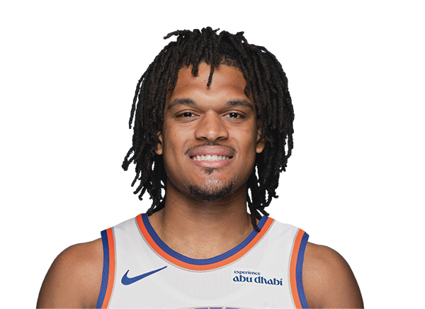

BASKETBALLKEEP
Dynasty · Redraft · Hardwood

SF · OKC
Dillon Jones
Keep #315
Board #321
Age 24
394 BK Value
Plus
- Helps in points. You are not punting the scoring column.
- Helps in steals. The defensive events are real.
- Helps in threes. Enough makes to keep the column green.
Minus
- Assists are light. Not a creator. Need dimes elsewhere.
Boards
Where the boards put him
High 246 · low 246.
| Board | Rank |
|---|---|
| Hashtag Basketball Dynasty | 246 |
| KeepTradeCut NBA | 246 |
All players · The Keep · The Board · BK News · Calculator